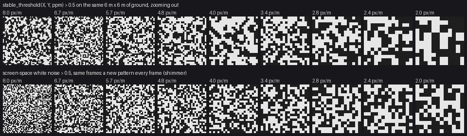
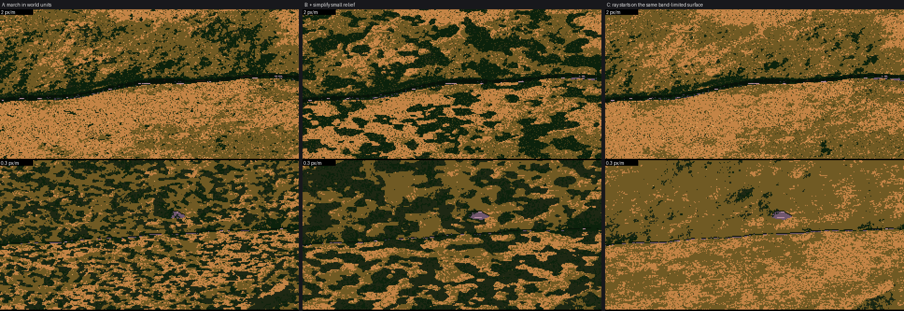

Part 2 of the grass-lod tutorials. Code: code/grasslod/noise.py, render.py (Raster, cast_shadow), marks.py (quantize_base), painter.py.
Part 1 made every mark decision a function of the mark's own random numbers. The same rule applies to everything else in the picture that uses a random number, a threshold, or a sample position. If anything is a function of screen position, it slides across the ground as the camera moves ("shower door"), or it reshuffles every frame (shimmer). Five places this bit me, and how each is anchored.
Every world field (height, wetness, clumps, straw, mottling) is fractal value noise. When zoomed out, octaves finer than a pixel must go, or they alias into noise. Cut them at a hard limit and the terrain changes shape with a click each time the zoom halves. Fade them over one octave:
def fbm(x, y, base_wl, octaves, gain=0.5, lac=2.0, seed=0, min_wl=0.0):
tot = 0.0; amp = 1.0; wl = base_wl; norm = 0.0
for o in range(octaves):
if min_wl > 0:
w = np.clip((wl / min_wl - 2.0) / 2.0, 0.0, 1.0) # 0 below 2 samples, 1 above 4
else:
w = 1.0
if np.any(w > 0):
ang = 0.6 * o + seed * 0.37 # rotate octaves: no lattice alignment
ca, sa = np.cos(ang), np.sin(ang)
xr = (x * ca - y * sa) / wl
yr = (x * sa + y * ca) / wl
tot = tot + amp * w * value_noise(xr + 17.3 * o, yr - 9.1 * o, seed + o * 101)
norm += amp; amp *= gain; wl /= lac
return tot / norm
min_wl is one pixel in metres (1 / ppm). Note norm still counts faded octaves, so the field's amplitude doesn't swell as octaves leave.
The speed tip that mattered most: the lattice hash is a table lookup (noise.lat: a permutation table of 4096 plus a table of floats). My first integer-multiply hash took nearly half the frame time (5.9 s of 12.4 s in the profile).
Some decisions need a threshold per pixel: which side of a soft shadow edge a pixel falls, whether a patch is straw or green, where a water dash goes. White noise per frame shimmers. A fixed noise texture in world units is stable, but at one zoom its cells are 20 px and at another 0.1 px. The fix, after "surface-stable fractal dithering": world value noise whose lattice is about px screen pixels, taken at the two nearest power-of-two world scales and cross-faded by the fractional zoom octave.
def stable_threshold(X, Y, ppm, px=1.6, seed=5):
cell = px / ppm
lv = np.log2(cell)
k = np.floor(lv)
f = lv - k
a = value_noise(X / 2 ** k, Y / 2 ** k, seed + int(k) * 3)
b = value_noise(X / 2 ** (k + 1), Y / 2 ** (k + 1), seed + int(k + 1) * 3)
v = (a * (1 - f) + b * f) / np.sqrt((1 - f) ** 2 + f ** 2)
cdf = _cdf_table()
return (np.searchsorted(cdf, v) + 0.5) / (len(cdf) + 1)

Top: stable_threshold > 0.5 over the same 6 m of ground, zooming out 1.19× per step. The pattern grows and divides as the zoom crosses octaves. Bottom: screen white noise, statistically the same, but a new picture every frame. A still figure can't show shimmer, so here's the number: on 20,000 fixed ground points over 24 steps of 6% zoom, the stable threshold flips 4.2% of points per step (max 6.1%), where per-frame white noise flips 50%.
Two details matter:
sqrt the threshold's contrast would pulse with every octave.argsort(argsort(v))). That's exactly uniform, but a pixel's rank depends on everything else in the frame, so panning moved every threshold a little. Pixels near the cut flickered. _cdf_table samples the blend once, offline, and every frame uses the same table.Where a Bayer pattern is wanted (Ferrari uses patterned dither for smooth, precise ramps, and in his mid-distance grass), index the Bayer matrix by a pixel grid aligned to the world, not to the screen:
# painter.py: world-aligned pixel rows, offset by the camera's own pixel origin
R.iy = (np.arange(H)[:, None] - int(np.floor(cam.u0() * ppm + 1e-6)) + np.zeros((1, W), int)).astype(np.int64)
# marks.py, quantize_base
ix = np.floor(X * ppm + 1e-6).astype(np.int64)
t = BAYER4[iy % 4, ix % 4]
A whole-pixel pan reproduces the pattern exactly. A zoom can't pop it, because a checker has no scale: it's always one-pixel cells.
My raster marches ground samples in depth for each column. The samples started at the camera's near edge, so a pan shifted every sample position a fraction of a step, which shifted every surface position a hair, which moved every threshold decision near its cut. Put them on a global grid:
# render.py, Raster: world-anchored sample rows (a global grid of spacing dy)
ys = dy * np.arange(np.floor(y_near / dy), np.ceil(y_far / dy) + 1)
The general rule: any array of sample positions should be spacing * integers, never start + spacing * integers with a camera-dependent start. (Honesty: I made this change during the pan-test hunt, and on its own it didn't move the pan-test number, which was dominated by the two array bugs described in testing. It's still the right rule; I just can't show you its effect separately.)
A cast shadow is the most zoom-sensitive thing in a landscape, because it's a long-range test. Two lessons, both learned by breaking it.
The march is in metres, not pixels. My first ray march had reach = max(3.0, 40 * min_wl), forty pixels. Zooming out, rays reached further and found hills they couldn't see before, and ground fell into shadow as you pulled back. A slow pop. The fix: geometric steps from 5 cm to 80 m regardless of the zoom, each step reading terrain band-limited to its own distance (d / 6), so near steps see small relief and far steps see hills.
The ray starts on the same surface it's tested against. With that fix in, the far views turned to leopard skin:

A: world-unit march, far frames (2 and 0.3 px/m) full of rosettes. B: I assumed the rosettes were real shadows of small relief and simplified them: worse. C: the actual fix.
The ray started at the fine surface height but was tested against coarser, smoother samples. In every fine hollow, the start sat below the smoothed surface, and the hollow shadowed itself. Starting the ray from the surface at the same band limit fixed it:
for d in np.geomspace(0.05, reach, steps):
xs = X + sun[0] / horiz * d
ys = Y + sun[1] / horiz * d
mw = max(min_wl * simplify_px, d / 6.0)
z0 = np.maximum(world.height(X, Y, mw), world.water_level) # same band limit as the test
zr = z0 + sun[2] / horiz * d
excess = np.maximum(excess, (world.height(xs, ys, mw) - zr - 0.02) / d)
return np.clip(excess / soft + 0.5, 0, 1)
simplify_px stayed in: relief smaller than 8 px casts no shadow, because at that size it's texture and the marks carry it. That's a painter's simplification, and because it's a band limit, not a threshold, it moves smoothly with the zoom.
The soft result (0..1) is turned into the lit/shadow family by a stable_threshold, so every shadow edge is a dithered fringe that stays put on the ground.
You can't see any of these in a still frame. The pan test can: pan by whole pixels and demand identical pixels. Mine now passes exactly at 22, 6 and 1.5 px/m. When I first ran it, 7% of pixels differed; most of that turned out to be two array bugs, not anchoring.